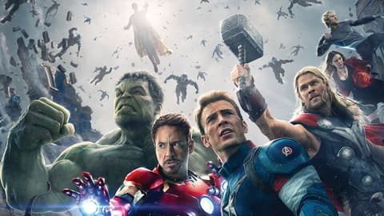

About:
Marvel Cinematic Universe (MCU) Phase 2: of the MCU spanned from 2013 to 2015 and consisted of six films: Iron Man 3, Thor: The Dark World, Captain America: The Winter Soldier, Guardians of the Galaxy, Avengers: Age of Ultron, and Ant-Man.
Key Characters:Introduced Phase 2 introduced several key characters to the MCU, including the Guardians of the Galaxy (Star-Lord, Gamora, Drax, Rocket, and Groot), Bucky Barnes/Winter Soldier, Scarlet Witch, and Quicksilver.
Expanding the Universe Phase 2: expanded the cosmic side of the MCU with Guardians of the Galaxy and introduced new threats such as Ultron and HYDRA. It also explored the political and ethical implications of superheroes with Captain America: The Winter Soldier.